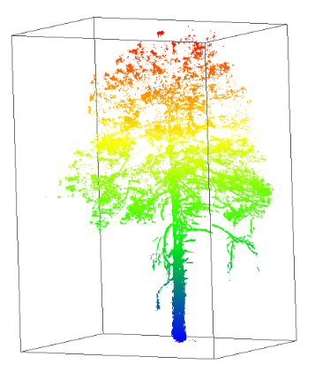

Cloud Optimized Point Clouds
Overview of Cloud Optimized Point Cloud (COPC)¶


The Cloud Optimized Point Cloud developed by HOBU is similar in concept to the COG. It is an .laz(lasZip) format with additional point data organized in a clustered octree. This allows for http streaming of point cloud data from cloud storage (AWS S3, Google Cloud Storage, Azure Blob Storage, etc.) to a web browser or other applications. Just like a COG, it eliminates the need to download large datasets to a local machine for visualization and analysis.
COPC is based on the open source compression file format, *.LAZ, which was developed by Martin Isenburg (RIP) and is licensed by his company RapidLASso

For technical information on the formats, see the COPC Specification and the LAS Standard
Example COPCs Online¶
Here is a drone-based point cloud in the COPC format. It is 686 mb and stored in Cyverse Data Store here. You can view it here using the COPC Viewer.
Here is another COPC example. It is 3DEP lidar data over Prescott, AZ. It is also stored in the Cyverse Data Store here.
Applications that can Read COPC¶
COPCs are just a special case of laz, so any application that can read laz can read COPC.
QGIS, CloudCompare, Argis Pro, and PDAL can all read COPC
Create your own COPC¶

The best toolset to creat your own COPC point clouds is PDAL. Point Data Abstraction Library (PDAL) is a C++ library for translating and manipulating point cloud data.
Installing Open Source Lidar tools
LASTools is available for both open source and a paid licensed version
PDAL.io - suggest using a Binary install using a package manager like conda.
Entwine Point Tiles¶

Entwine is a data organization library for massive point clouds, designed to conquer datasets of trillions of points as well as desktop-scale point clouds.
HoBu was contracted by the USGS to process all of the 3DEP lidar data, these are now hosted on commercial cloud in both reqestor pays buckets and FOR FREE as Entwine Point Tiles: https://usgs.entwine.io/
-
More information about these datasets can be found at https://registry.opendata.aws/usgs-lidar/ and at its GitHub page at https://github.com/hobu/usgs-lidar/
These data were converted from USGS 3DEP EPT data using PDAL pipeline
processing AWS EPT with PDAL
USGS 3DEP data are all freely available over https:// using the Entwine protocol.
These data can be re-processed to become COPC using PDAL's writers.copc function.
Example ept2copc.json script for running directly from the internet to your computer or local host
Warning you must have a fast internet connection and a large amount of RAM on your machine to process large datasets (spatial extent / dense point clouds)
conda activate pdal
ept2copc.json
Contents of ept2copc.json
{
"pipeline": [
{
"bounds": "([-12521659, -12513587], [4099398, 4107470], [1500, 3200])",
"filename": "https://s3-us-west-2.amazonaws.com/usgs-lidar-public/USGS_LPC_AZ_VerdeKaibab_B2_TL_2018_LAS_2019/ept.json",
"type": "readers.ept",
"requests": 128,
"tag": "readdata"
},
{
"type":"filters.outlier",
"method":"statistical",
"mean_k":12,
"multiplier":2.2
},
{
"type":"filters.smrf",
"scalar":1.2,
"slope":0.2,
"threshold":0.45,
"window":16.0
},
{
"type": "filters.range",
"limits": "Classification![7:7],Z[2000:2700]"
},
{
"type":"filters.hag_delaunay"
},
{
"in_srs": "EPSG:3857",
"out_srs": "EPSG:26912",
"tag": "reprojectUTM",
"type": "filters.reprojection"
},
{
"filename": "USGS_LPC_AZ_VerdeKaibab_B2_TL_2018_LAS_2019.copc.laz",
"inputs": [ "reprojectUTM" ],
"tag": "writerscopc",
"type": "writers.copc"
},
{
"filename": "USGS_LPC_AZ_VerdeKaibab_B2_TL_2018_LAS_2019_dem.tif",
"gdalopts": "tiled=yes, compress=deflate",
"inputs": [ "writerscopc" ],
"nodata": -9999,
"output_type": "min",
"resolution": 1.0,
"type": "writers.gdal",
"window_size": 6
}
]
}
pdal -v 5 pipeline ept2copc.json
When the pdal script completes, you will have two files: (1) a new .laz file with COPC baked into it, and (2) a digital elevation model GeoTIFF generated by GDAL.
Planetary Computer 3DEP Jupyter Notebook
Reference Material¶
Library of Congress LAS definition
USGS NGS Lidar Base Specification